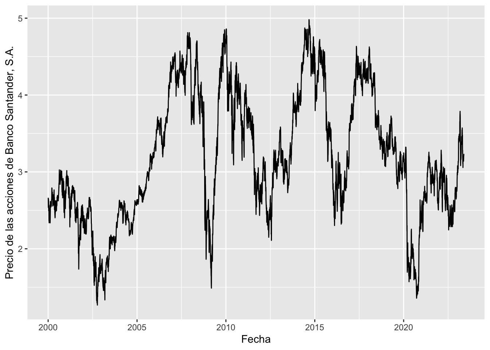
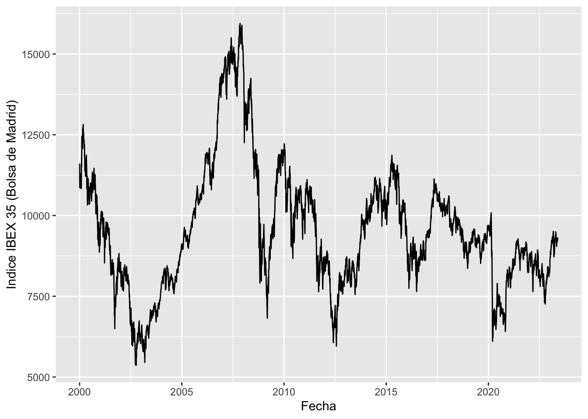
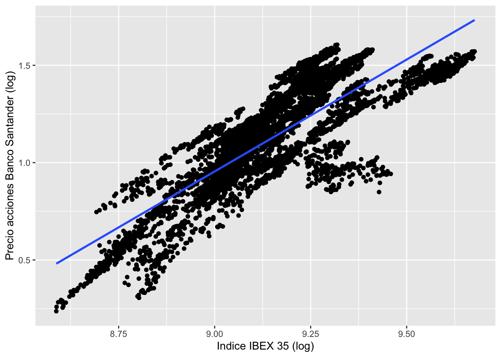
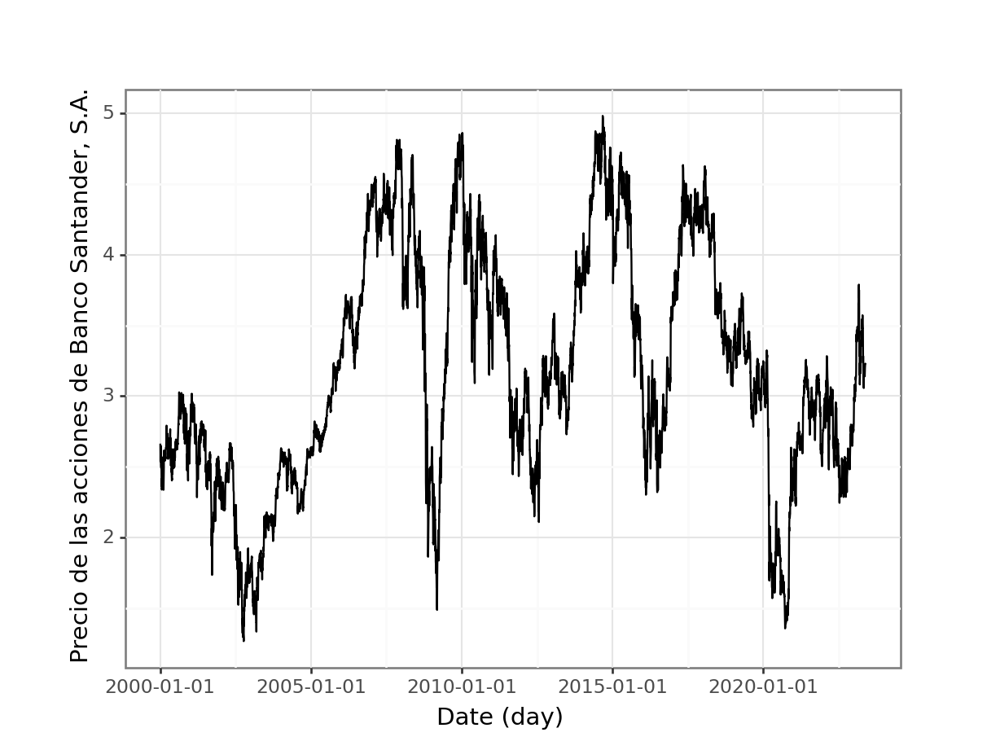
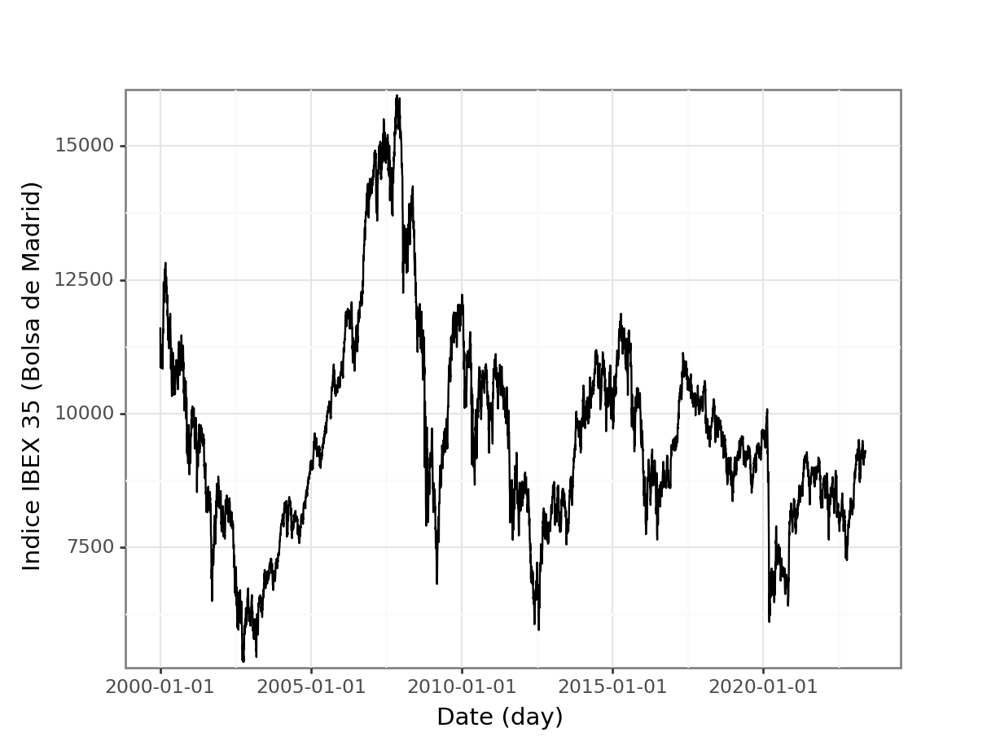
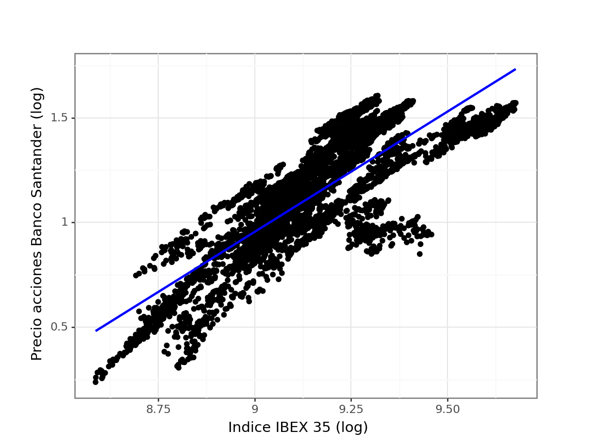

Aplicación 1.2b (Gestión y representación gráfica de datos financieros): Relaciones entre activos bursátiles
En esta aplicación se analizará gráficamente la relación existente entre las variables financieras \(log(pSAN_t)\) y \(log(pIBEX_t)\), donde \(pSAN\) es el precio de las acciones del Banco Santander y \(pIBEX\) es el índice bursátil IBEX 35. Antes de llegar a la gráfica final, se tendrán que ejecutar comandos específicos de filtrado (filter), selección (select), transformación (mutate) y fusión de ficheros (join).
Código R
# Lectura de librerías
library(tidyverse)
library(lubridate)
library(scales)
# Lectura de datos de las 30 mayores empresas del IBEX
# (https://finance.yahoo.com/quote/%5EIBEX/components?p=%5EIBEX&guccounter=1)
stock_data <- read_csv("data/IBEX_top30.csv")
head(stock_data)# A tibble: 6 × 10
`Unnamed: 0` symbol date open high low close volume adjusted
<dbl> <chr> <date> <dbl> <dbl> <dbl> <dbl> <dbl> <dbl>
1 1 RED.MC 2000-01-03 1.52 1.54 1.48 1.49 775472 0.534
2 2 RED.MC 2000-01-04 1.50 1.50 1.41 1.41 786100 0.506
3 3 RED.MC 2000-01-05 1.41 1.49 1.40 1.43 702520 0.513
4 5 RED.MC 2000-01-07 1.48 1.51 1.44 1.5 319884 0.538
5 6 RED.MC 2000-01-10 1.51 1.52 1.50 1.5 256932 0.538
6 7 RED.MC 2000-01-11 1.5 1.52 1.5 1.5 290704 0.538
# ℹ 1 more variable: company_name <chr>tail(stock_data)# A tibble: 6 × 10
`Unnamed: 0` symbol date open high low close volume adjusted
<dbl> <chr> <date> <dbl> <dbl> <dbl> <dbl> <dbl> <dbl>
1 139424 COL.MC 2023-05-16 5.43 5.58 5.43 5.55 1078400 5.55
2 139425 COL.MC 2023-05-17 5.59 5.59 5.43 5.51 1142307 5.51
3 139426 COL.MC 2023-05-18 5.48 5.57 5.41 5.44 770970 5.44
4 139427 COL.MC 2023-05-19 5.5 5.52 5.43 5.5 923489 5.5
5 139428 COL.MC 2023-05-22 5.5 5.54 5.47 5.52 663698 5.52
6 139429 COL.MC 2023-05-23 5.55 5.68 5.55 5.65 1029332 5.65
# ℹ 1 more variable: company_name <chr># filter
SAN <- stock_data %>% filter(symbol == "SAN.MC")
# select
p_SAN <- SAN %>% select(date,adjusted)
head(p_SAN)# A tibble: 6 × 2
date adjusted
<date> <dbl>
1 2000-01-03 2.66
2 2000-01-04 2.60
3 2000-01-05 2.54
4 2000-01-06 2.54
5 2000-01-07 2.65
6 2000-01-10 2.63tail(p_SAN)# A tibble: 6 × 2
date adjusted
<date> <dbl>
1 2023-05-16 3.14
2 2023-05-17 3.16
3 2023-05-18 3.18
4 2023-05-19 3.20
5 2023-05-22 3.23
6 2023-05-23 3.22# Lectura de datos del índice IBEX
IBEX <- read_csv("data/IBEX.csv")
# select
p_IBEX <- IBEX %>% select(date,adjusted)
head(p_IBEX)# A tibble: 6 × 2
date adjusted
<date> <dbl>
1 2000-01-03 11610.
2 2000-01-04 11207.
3 2000-01-05 10863.
4 2000-01-07 11102.
5 2000-01-10 11173.
6 2000-01-11 11012.tail(p_IBEX)# A tibble: 6 × 2
date adjusted
<date> <dbl>
1 2023-05-16 9191.
2 2023-05-17 9212.
3 2023-05-18 9213.
4 2023-05-19 9252.
5 2023-05-22 9305
6 2023-05-23 9267 # join
data_daily <- inner_join(p_IBEX,p_SAN, by = "date") %>% rename(pIBEX = adjusted.x, pSAN = adjusted.y)
# mutate
data_daily <- data_daily %>% mutate(year = year(date), month = month(date))
data_daily <- data_daily %>% mutate(l_pSAN = log(pSAN), l_pIBEX = log(pIBEX))
head(data_daily)# A tibble: 6 × 7
date pIBEX pSAN year month l_pSAN l_pIBEX
<date> <dbl> <dbl> <dbl> <dbl> <dbl> <dbl>
1 2000-01-03 11610. 2.66 2000 1 0.980 9.36
2 2000-01-04 11207. 2.60 2000 1 0.956 9.32
3 2000-01-05 10863. 2.54 2000 1 0.931 9.29
4 2000-01-07 11102. 2.65 2000 1 0.974 9.31
5 2000-01-10 11173. 2.63 2000 1 0.966 9.32
6 2000-01-11 11012. 2.54 2000 1 0.931 9.31tail(data_daily)# A tibble: 6 × 7
date pIBEX pSAN year month l_pSAN l_pIBEX
<date> <dbl> <dbl> <dbl> <dbl> <dbl> <dbl>
1 2023-05-16 9191. 3.14 2023 5 1.14 9.13
2 2023-05-17 9212. 3.16 2023 5 1.15 9.13
3 2023-05-18 9213. 3.18 2023 5 1.16 9.13
4 2023-05-19 9252. 3.20 2023 5 1.16 9.13
5 2023-05-22 9305 3.23 2023 5 1.17 9.14
6 2023-05-23 9267 3.22 2023 5 1.17 9.13# ggplot
p1 <- ggplot(data = data_daily, aes(x = date)) +
geom_line(aes(y = pSAN), linewidth = 0.5) +
labs(y = "Precio de las acciones de Banco Santander, S.A.", x = "Fecha")
p1
p2 <- ggplot(data = data_daily,aes(x = date)) +
geom_line(aes(y = pIBEX), linewidth = 0.5) +
labs(y = "Indice IBEX 35 (Bolsa de Madrid)", x = "Fecha")
p2
p3 <- ggplot(data_daily, aes(x = l_pIBEX,y = l_pSAN)) +
geom_point() +
stat_smooth(method = lm, se=FALSE) +
labs(x = "Indice IBEX 35 (log)",y = "Precio acciones Banco Santander (log)")
p3
Código Python
# Lectura de librerías
import numpy as np
import pandas as pd
import matplotlib.pyplot as plt
from plotnine import *
from datetime import datetime
# Lectura de datos 30 mayores empresas del IBEX
# (https://finance.yahoo.com/quote/%5EIBEX/components?p=%5EIBEX&guccounter=1)
stock_data = pd.read_csv('data/IBEX_top30.csv')
stock_data.head() Unnamed: 0 symbol ... adjusted company_name
0 1 RED.MC ... 0.534056 Red Eléctrica Corporación, S.A.
1 2 RED.MC ... 0.506278 Red Eléctrica Corporación, S.A.
2 3 RED.MC ... 0.513446 Red Eléctrica Corporación, S.A.
3 5 RED.MC ... 0.537640 Red Eléctrica Corporación, S.A.
4 6 RED.MC ... 0.537640 Red Eléctrica Corporación, S.A.
[5 rows x 10 columns]stock_data.tail() Unnamed: 0 symbol ... adjusted company_name
138863 139425 COL.MC ... 5.505 Inmobiliaria Colonial, SOCIMI, S.A.
138864 139426 COL.MC ... 5.440 Inmobiliaria Colonial, SOCIMI, S.A.
138865 139427 COL.MC ... 5.500 Inmobiliaria Colonial, SOCIMI, S.A.
138866 139428 COL.MC ... 5.520 Inmobiliaria Colonial, SOCIMI, S.A.
138867 139429 COL.MC ... 5.650 Inmobiliaria Colonial, SOCIMI, S.A.
[5 rows x 10 columns]# filter
SAN = stock_data[stock_data['symbol']=='SAN.MC']
# select
p_SAN = SAN[['date','adjusted']]
p_SAN['date']=pd.to_datetime(p_SAN['date'])
p_SAN.head() date adjusted
23629 2000-01-03 2.663743
23630 2000-01-04 2.600545
23631 2000-01-05 2.537346
23632 2000-01-06 2.537346
23633 2000-01-07 2.649700p_SAN.tail() date adjusted
29633 2023-05-17 3.1580
29634 2023-05-18 3.1755
29635 2023-05-19 3.2000
29636 2023-05-22 3.2295
29637 2023-05-23 3.2250# Lectura de datos del índice IBEX
IBEX = pd.read_csv('data/IBEX.csv')
p_IBEX = IBEX[['date','adjusted']]
p_IBEX['date']=pd.to_datetime(p_IBEX['date'])
p_IBEX.head() date adjusted
0 2000-01-03 11609.988281
1 2000-01-04 11206.587891
2 2000-01-05 10863.088867
3 2000-01-07 11102.388672
4 2000-01-10 11173.288086p_IBEX.tail() date adjusted
5941 2023-05-17 9211.599609
5942 2023-05-18 9213.099609
5943 2023-05-19 9251.500000
5944 2023-05-22 9305.000000
5945 2023-05-23 9267.000000# merge (join)
data_daily=pd.merge(p_IBEX,p_SAN,how='inner',on='date').\
rename(columns={'adjusted_x':'pIBEX','adjusted_y':'pSAN'})
# time
data_daily['year'] = data_daily['date'].dt.year
data_daily['month'] = data_daily['date'].dt.month
# mutate
data_daily['l_pSAN']=data_daily['pSAN'].map(lambda x:np.log(x))
data_daily['l_pIBEX']=data_daily['pIBEX'].map(lambda x:np.log(x))
data_daily.head() date pIBEX pSAN year month l_pSAN l_pIBEX
0 2000-01-03 11609.988281 2.663743 2000 1 0.979732 9.359621
1 2000-01-04 11206.587891 2.600545 2000 1 0.955721 9.324257
2 2000-01-05 10863.088867 2.537346 2000 1 0.931119 9.293126
3 2000-01-07 11102.388672 2.649700 2000 1 0.974446 9.314916
4 2000-01-10 11173.288086 2.626292 2000 1 0.965573 9.321281data_daily.tail() date pIBEX pSAN year month l_pSAN l_pIBEX
5940 2023-05-17 9211.599609 3.1580 2023 5 1.149939 9.128219
5941 2023-05-18 9213.099609 3.1755 2023 5 1.155465 9.128382
5942 2023-05-19 9251.500000 3.2000 2023 5 1.163151 9.132541
5943 2023-05-22 9305.000000 3.2295 2023 5 1.172327 9.138307
5944 2023-05-23 9267.000000 3.2250 2023 5 1.170933 9.134215# ggplot (Python)
(ggplot(data_daily) + geom_line(aes('date','pSAN'), size = 0.5)
+ labs(y = "Precio de las acciones de Banco Santander, S.A.",x= "Date (day)") + theme_bw())<ggplot: (318865649)>
(ggplot(data_daily) + geom_line(aes('date','pIBEX'), size = 0.5) + scale_y_continuous(expand = [0.01,0.01])
+ labs(y = "Indice IBEX 35 (Bolsa de Madrid)",x= "Date (day)") + theme_bw())<ggplot: (321588573)>
(ggplot(data_daily,aes('l_pIBEX','l_pSAN')) + geom_point() + geom_smooth(method='lm',se=False, color = "blue") + labs(x="Indice IBEX 35 (log)",y="Precio acciones Banco Santander (log)") + theme_bw())<ggplot: (321634268)>